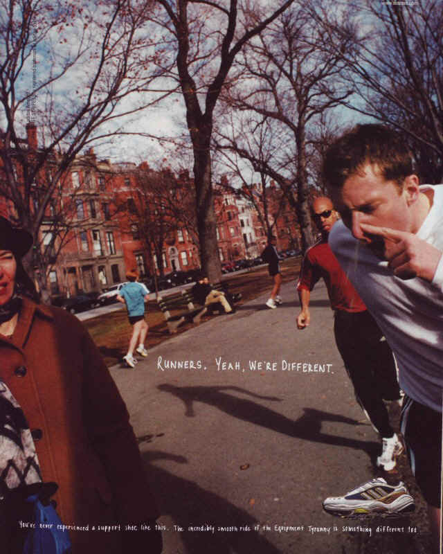

What is techno?
Isaac Asimov - The Relativity of Wrong
George Orwell - Why I Write
Slate Star Codex - The Categories Were Made for Man
Scott Alexander - Guided by The Beauty of our Weapons
Cool running gear
Courgette salad recipe.
Runners, yeah we're different

Recipes
Cookbooks
- Towpath: Recipes and Stories (Lori de Mori & Laura Jackson)
- Cooking: Simply and Well, for One or Many. (Jeremy Lee of Quo Vadis)
- Salt, Fat, Acid, Heat: Mastering the Elements of Good Cooking (Samin Nosrat)
- The Forager's Calendar: A Seasonal Guide to the Best Foods (John Wright)
- Brutto: A (Simple) Florentine Cookbook (Giulia Scarpaleggia)
- Nose to Tail Eating (Fergus Henderson)
- The Complete Nose to Tail (Fergus Henderson)
- Five Quarters: Recipes and Notes from a Kitchen in Rome (Rachel Roddy)
- The Farm Table (Julius Roberts)
- madebymusashi's recs
Food takes
- Pepper is an underrated spice
- Cheese sandwiches are the best
Home items